사회적가치경영
인간존중의 기업 문화를 기반으로,
사업장에서 발생할 수 있는 위험요인을 파악·예방하여
안전하고 쾌적한 근무 환경을 제공하고자 노력합니다.
안전보건경영
지속가능한
안전하고 건강한 일터 만들기
삼양식품은 국제 안전보건경영시스템 인증을 취득하였으며,
PDCA 사이클을 기반으로 현장의 안전과 보건에 대한
유해·위험 요인을 제거하고 선제적 예방 및 보호 조치를 취함으로써
근로자들이 안전하고 건강하게 일할 수 있는 환경을
만들어 가고자 합니다.
목표
FSI 0.35 · LTIR 0.18 · OIFR 0.03
FSI 0.35 · LTIR 0.18 · OIFR 0.03
-
- approval_delegation
- 안전보건경영시스템 고도화
-
- person_shield
- 위험관리 강화
-
- connect_without_contact
- 안전문화 확산
-
- encrypted_add
- 안전역량 강화
안전보건경영 활동
인권경영
삼양식품은 글로벌 식품기업으로서 국제사회의 인권 원칙을 적극적으로 지지하고 있습니다.
국제연합(UN)의 ‘세계인권선언’, ‘기업과 인권 이행지침’, ‘국제노동기구 선언’ 등에서 제시하는 국제적 인권 원칙을 바탕으로 삼양식품의 인권경영원칙을 수립하였습니다.

삼양식품 인권경영
-
- groups_2
- 강제노동 아동노동 금지
-
- person_apron
- 차별없는 고용, 근무환경
-
- handshake
- 단체교섭의 자유 보장
-
- engineering
- 산업안전 보장
-
- admin_panel_settings
- 파트너 보호 및 관리
-
- nature_people
- 지역주민 인권과 환경 보호
소비자중심경영
소비자중심경영 실천을 통한
고객신뢰 강화
삼양식품은 모든 경영활동을 소비자의 관점에서 전개하는 소비자중심경영(CCM)을 도입하였습니다.
앞으로도 소비자 후생과 권익 증진 등 기업의 사회적 책임을 성실히 이행하겠습니다.
-
- finance_chip
- 경제
- Operation 개선을 통한
미래지향 기업 기반 구축
-
- temp_preferences_eco
- 환경
- 환경적 상생의 식자재 및
Food Tech Biz 육성
-
- diversity_3
- 사회
- 회사, 임직원, 협력사 간
상생의 기업 문화 구현
-
- apartment
- 기업
- 소비자중심경영 도입 및
대내외 경쟁력 강화
소비자중심경영(CCM) 인증
통합 VOC 체계 구축
사전 예방 강화 및 VOC 데이터 제공
지역적 편차 제거를 위한 전문 CS 담당 신설
소비자중심경영 인증
소비자 권익 증진을 위해 노력하고
소비자 후생 증대에 기여합니다.